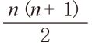
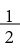
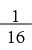
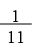
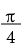
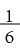
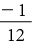
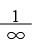

+
+ –
– +
+ –
–我把无穷大这个概念放到最后讲，并不是说这个概念不重要。在第1章开始数学世界的探索之旅时，我们研究了1~100的求和问题：
1 + 2 + 3 + 4 + … + 100 = 5 050
最后，我们得出了1~ n的求和公式：
1 + 2 + 3 + … + n =

还得出了有限个数字的其他求和公式。本章将探究无穷级数求和问题，例如：
1 +

+ +
+ +
+
+ …我来告诉大家，上面这道题的答案是2。而且，2不是近似答案，而是确切得数。有的无穷级数求和非常有意思，例如：
1 – + – + –

+ … =
有的无穷级数求和则无法给出确切答案，例如：
1 + + + + +

+ …我们把所有正数的和定义为“无穷大”，记作:
1 + 2 + 3 + 4 + 5 + … = ∞
它的意思是，这个和将不断增加，没有上限。换句话说，这个和最终将超过你能想到的所有数字： 100、100万、1015，或者其他大数。不过，在本章结尾部分，我们将看到有人可以证明：
1 + 2 + 3 + 4 + 5 + … =

你是不是觉得很奇怪？我希望如此！一旦走进无穷大这个光怪陆离的领域，你就会发现各种各样稀奇古怪的现象。数学之所以引人入胜、充满乐趣，这也是其中一个原因。
无穷大是不是一个数字呢？尽管我们有时候把它当作一个数字，但实际上它并不是数字。粗略地说，数学界可能会这样理解无穷大的概念：
∞+ 1 =∞ ∞+∞ =∞ 5×∞= ∞

= 0从技术上讲，最大的数字是不存在的，因为我们总是可以加上1，得到一个更大的数字。从本质上讲，∞这个符号的意思是“任意大”，或者说大于所有正数。同理，–∞的意思是这个数字比所有负数都小。顺便告诉大家，∞–∞（无穷大减去无穷大）和1/0都无解。大家可能会认为1/0 =∞，因为1被越来越小的数除，商应该越来越大。但是，如果我们用越来越接近0的负数去除1，商就会朝着负数的方向渐行渐远。